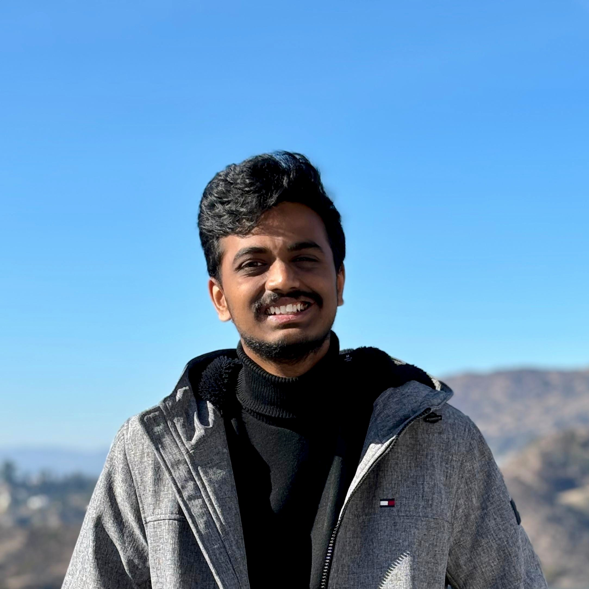

2026 · Preprint
The L² contraction of solutions with large perturbation in multiple space dimensions from the oscillatory dispersive planar shock
arXiv:2607.27118
Read preprint ↗Mathematics · University of Kansas
Ph.D. student working on nonlinear waves and partial differential equations.
My research focuses on the stability of nonlinear waves and conservation laws, particularly dispersive shock waves and L²-contraction. I am advised by Prof. Geng Chen at the University of Kansas.
Explore my research
I am a Ph.D. student in Mathematics at the University of Kansas. My research concerns hyperbolic and dispersive partial differential equations, especially the behavior of nonlinear waves under perturbations.
I currently study L²-stability and contraction for shock profiles in multidimensional models, including the dissipative Kadomtsev–Petviashvili equation and multidimensional KdV–Burgers-type equations.
Previously, I worked on existence and regularity problems for elliptic PDEs involving the (p,q)-Laplacian.
arXiv:2607.27118
Read preprint ↗Asymptotic Analysis, 136, 1–17
Journal article ↗University of Kansas, Lawrence · October 30–31, 2026
Contributed Talk
L²-Contraction of Planar Traveling Waves in the 2D Dissipative KP Equation
Presentation slides ↗University of Nebraska–Lincoln
University of Kansas, Lawrence
TIFR-CAM, Bengaluru
Indian Institute of Science, Bengaluru
IIT Madras, Chennai
Ph.D. in Mathematics
In progress
Advisor: Prof. Geng Chen
Integrated BS–MS
2018–2023
Mathematics major, Physics minor